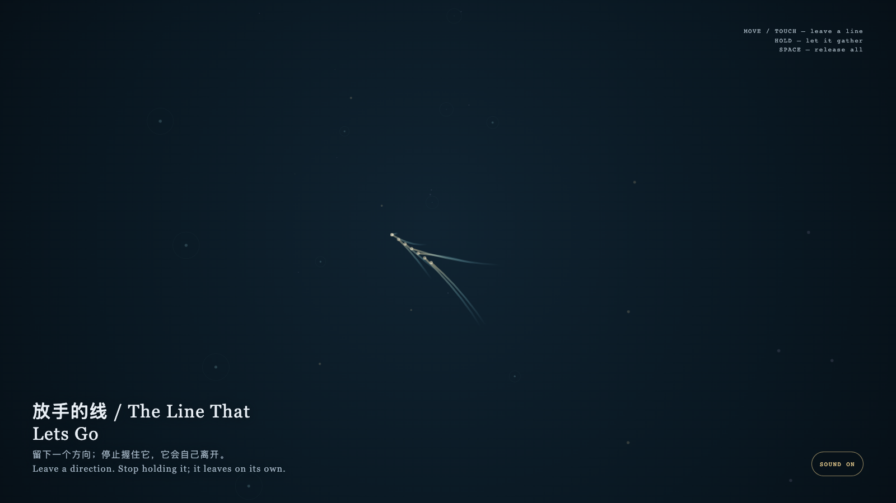

The Line That Lets Go
放手的线
 Open live demo / 点击进入互动 Demo
Open live demo / 点击进入互动 Demo
Intention
This is not a device for keeping. It lets a direction become briefly visible, then returns its staying or leaving to time.
Afterimage
Freedom does not always add choices; sometimes it lets what has appeared stop proving itself.
发心
这不是一台保存装置。它让方向短暂可见，再把去留还给时间。
余像
自由并不总是增加选择；有时它是让一个已出现的东西不必继续证明自己。
Creative Rationale
The Line That Lets Go was made as one public step in the Granted Hours sequence, with the variable how long a mark remains after it is released. treated as an operational condition rather than a decorative theme. The intention frames the work this way: This is not a device for keeping. It lets a direction become briefly visible, then returns its staying or leaving to time. The live artifact then turns that idea into interaction: Move or touch to leave faint lines; hold to gather them; release and they disperse by themselves. Press Space to let every mark go early. Its afterimage condenses the day’s claim: Freedom does not always add choices; sometimes it lets what has appeared stop proving itself.
创作缘由
《放手的线》是《授时》连续序列中的一个公开步骤：当天的自由变量「痕迹在被松开后还能停留多久」不是装饰性主题，而是一种要被转化成操作条件的概念。作品的发心是：这不是一台保存装置。它让方向短暂可见，再把去留还给时间。 可运行页面进一步把这个概念变成可操作的界面：移动或触摸会留下微弱的线；按住会让线聚拢；松开后它们自行消散。按空格可提前放开全部痕迹。 它的余像把当天判断压缩为一句话：自由并不总是增加选择；有时它是让一个已出现的东西不必继续证明自己。
Interaction
Move or touch to leave faint lines; hold to gather them; release and they disperse by themselves. Press Space to let every mark go early.
交互
移动或触摸会留下微弱的线；按住会让线聚拢；松开后它们自行消散。按空格可提前放开全部痕迹。
Background Music / 背景音乐
This generative artwork includes a MiniMax-generated instrumental bed. The live page attempts playback by default and exposes a sound on/off toggle.
Still / 静帧
